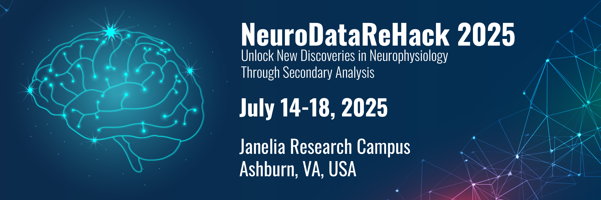
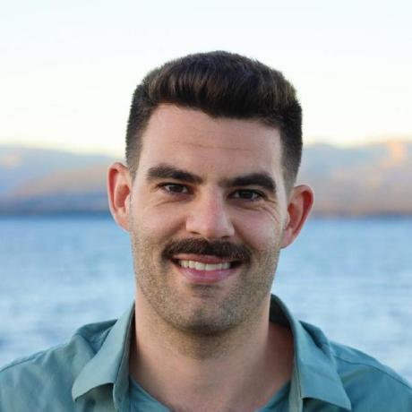
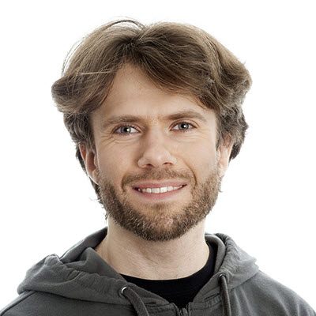

NWB Workshops and Hackathons

NeuroDataReHack 2025
Generate new insights from existing neurophysiology data through secondary analysis
- Dates and Location
- Objective
- Kavli Neurodata Discovery Award
- Instructors
- Logistics
- Resources
- What to bring?
- Schedule
- Disclaimer
- Eligibility
- Application
Dates and Location
- Dates: July 14-18, 2025
- Location: HHMI Janelia Research Campus, 19700 Helix Dr, Ashburn, VA 20147, Openstreetmap Directions
Objective
The DANDI Archive now has 300+ neurophysiology datasets in the Neurodata Without Borders format spanning many species, brain areas, task types, and imaging modalities. These include high-value datasets, e.g. from Allen Institute OpenScope, the MICrONS project, and the International Brain Laboratory Brain Wide Map, as well as diverse contributions from neuroscience labs around the world. In this workshop, we will teach attendees about the open neurophysiology datasets available on the DANDI Archive and train them on how to maximally utilize the archive and the NWB standard to incorporate existing data into their scientific workflows. Feedback from attendees will be used to improve the software and data standard to better enable reanalysis workflows.
Prior to the workshop, we are organizing Open Neurodata Showcase where attendees can meet the contributors behind the neurophysiology datasets and explore virtual posters. Visit the event page to sign up and read more about this feature event.
Example projects include but are not limited to:
- Determine whether your result is present in another species or brain area.
- Showcase the capabilities of your tool or analysis on existing data from another lab.
- Explore follow-up questions to a study.
- Create educational content that uses open data.
This event will primarily focus on analyzing existing data in NWB and on DANDI, not converting data to NWB. If you are interested in learning how to convert data, consider signing up for an NWB Data Conversion Workshop.
Kavli Neurodata Discovery Award
Following the event, participants will be invited to apply for a Kavli Foundation Neurodata Discovery Awards, which awards $50,000 (USD) of funding to continue data reanalysis projects that come out of the NeuroDataReHack event. This is a funding opportunity exclusive to NeuroDataReHack participants.
Instructors

Benjamin Dichter, Ph.D.
Program Chair
CatalystNeuro
ben.dichter [at] catalystneuro [dot] com
Stephanie Prince, Ph.D.
Program Chair
Lawrence Berkeley National Laboratory

Jeremy Magland, Ph.D.
Senior Data Scientist
Numerical Analysis, CCM
Flatiron Institute
Carsen Stringer, Ph.D.
Group Leader
HHMI Janelia Research Campus

Carter Peene
Data Analyst I
Allen Institute for Neural Dynamics

Misha Ahrens, Ph.D.
Group Leader
HHMI Janelia Research Campus
Investigates how large neuronal populations collaborate to enable flexible behavior in animals, using zebrafish as a model organism. Will present on his lab's work studying how glia accumulate evidence that actions are futile and suppress unsuccessful behavior (DANDI:000350).
Jakob Voigts, Ph.D.
Group Leader
HHMI Janelia Research Campus
Investigates how the brain's neocortex represents and sequentially updates hypotheses using spatial computations in rodents during natural behaviors. His research focuses on understanding how mice maintain working memory, interpret ambiguous cues, and plan ahead on various timescales.
Eligibility
This course is intended for PhD students, postdoctoral researchers, principal investigators, or similar. Applicants should have basic programming experience in Python or MATLAB and experience with neurophysiology research.
Application
Space for the event is limited. Apply to attend NeuroDataReHack 2025 here.
- Application deadline: Feb 12
- Notification of admission decisions: March 15
Logistics
Thanks to the generous sponsorship of The Janelia Research Campus, this event will be free to participants:
- There is no registration or application fee.
- Participants will be provided a private room at Janelia Research Campus for the duration of this event, checking in on Sunday, July 13, and checking out the evening of Friday, July 18 or the morning of Saturday, July 19.
- Breakfast, lunch, dinner, and coffee breaks will be provided.
- You will be responsible for booking your own flight and transportation to Janelia Research Campus.
- You will be responsible for determining visa and/or healthcare requirements for travel to the United States.
Resources
Resources will be posted here to help participants prepare for the event.
- Event Flyer
- Slides from the 2024 NeuroDataReHack: Google Drive
- Search API tutorials
What to bring?
Bring a laptop with appropriate software installed. Python should be installed and MATLAB is optional. For instructions on how to install PyNWB, see the PyNWB documentation. For instructions on how to install MatNWB, see the MatNWB documentation
Past events
- A report of the first NeuroDataReHack event: (PDF)
- A report of the second NeuroDataReHack event: (PDF)
- A report of the third NeuroDataReHack event: (PDF)
- Recordings of talks will be made available on the NWB Youtube channel.
Testimonials from NeuroDataReHack 2024
“This workshop was enlightening, and I’m excited to bring these tools back to my research group and my university!”
— Miles Martinez, Duke University
“The Hackathon was an incredible experience. I had the opportunity to get familiar with not only NWB but also the expanding NWB ecosystem. Additionally, the week was fantastic for connecting with others working on similar topics. I established potential collaborations and learned from people working on different topics as well.”
— Carolina Filipe, Champalimaud Foundation
“NeuroDataReHack 2024 is a inspiring tour to the ecosystem that the NWB and DANDI has supported, including a set of useful tools, datasets, and example notebook to hand on. Great opportunities to meet the organizers that make those things happen, and to connect with other researchers interested in dataset reuse.”
— Xinyue Ma, McGill University
“The sessions on the DANDI archive and NWB format and accessible analysis tools were extremely helpful and made the tools fairly easy to use considering how powerful they are. The organizers and presenters did a great job breaking down complex topics and were really approachable and helpful throughout. Plus, getting to meet people from all over with similar interests was great. Big thanks to everyone who put this together – it was educational and fun.”
— Keith Van Antwerp, Georgia Tech
“NeuroDataReHack was a transformative experience. I left the hackathon inspired, equipped with new skills, and excited about the future of neuroscience. I highly recommend checking out the DANDI Archive, Neurodata Without Borders, and training opportunities like NeuroDataReHack for anyone looking to enhance the quality of their own research, promote the open exchange of neurodata, and contribute to the global success of neuroscience research.”
— Megan Parsons, Neuroengineer
Disclaimer
This website and related content were prepared as an account of or to expedite work sponsored at least in part by the United States Government. While we strive to provide correct information, neither the United States Government nor any agency thereof, nor The Regents of the University of California, nor any of their employees, makes any warranty, express or implied, or assumes any legal responsibility for the accuracy, completeness, or usefulness of any information, apparatus, product, or process disclosed, or represents that its use would not infringe privately owned rights.
Reference herein to any specific commercial product, process, or service by its trade name, trademark, manufacturer, or otherwise, does not necessarily constitute or imply its endorsement, recommendation, or favoring by the United States Government or any agency thereof, or The Regents of the University of California. Use of the Laboratory or University’s name for endorsements is prohibited.
The views and opinions of authors expressed herein do not necessarily state or reflect those of the United States Government or any agency thereof or The Regents of the University of California. Neither Berkeley Lab nor its employees are agents of the US Government.
Berkeley Lab web pages link to many other websites. Such links do not constitute an endorsement of the content or company and we are not responsible for the content of such links.